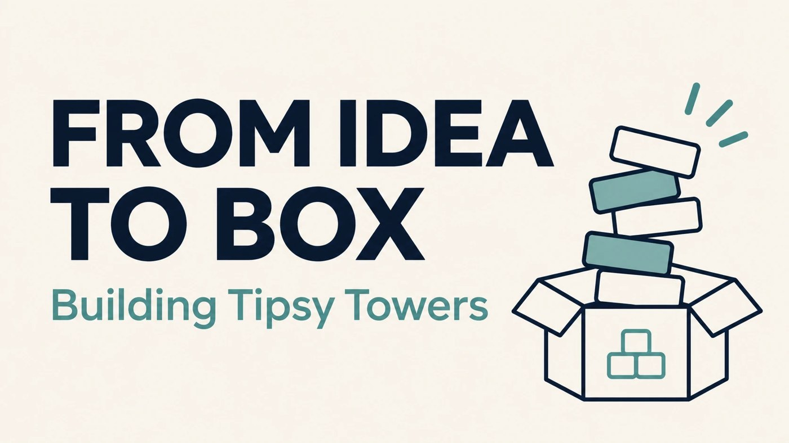

By Nicholas Dylewski · November 5, 2026 · 4 min read

Where the idea for Tipsy Towers came from
Before Tipsy Towers, my partner and I had sold products on Amazon through arbitrage. We were selling items that other companies had already created, and we kept running into competition from other sellers on the same listings. We wanted to build something of our own instead of competing over products we did not control.
We were college students, and we came up with the idea for a card game that people could play by stacking cards on red cups. A social game felt familiar to us because we were part of the audience, and it gave us a product idea with relatively low startup costs. The idea was not to treat it as a fun concept and stop there. We wanted to take it through product development, packaging, and branding, and see whether we could turn it into something finished and ready to sell.
I co-own Joobie Labs, which makes Tipsy Towers. I worked on the game from the first idea through product, packaging, and brand development. That meant thinking about the whole product experience, including what someone would see in the listing, what would be in the box, and how the brand would feel across the different pieces.
Figuring out who the game is really for
We had a useful starting point for defining the audience: we were college students ourselves. We understood the kinds of people who might be interested in a social party game because we were part of that group. That familiarity helped us make decisions about the product, but it did not mean we could skip thinking carefully about how to present it.
The look came together through trial and error. We tested different colors and fonts until we found a combination that felt visually appealing and worked with the product. We also decided to create a cup mascot to give the game more personality. The mascot became a way to bring the brand to life rather than relying only on the name and packaging to communicate what the game was.
Each card has a version of the mascot doing an action related to what the card says. That made the character part of the game itself, not just a logo placed on the box. The mascot took trial and error too. We kept adjusting until the character, the cards, and the broader visual style felt like they belonged together.
Defining the audience and look taught me that branding is a series of choices. A product can have a clear concept, but the design still needs to make the experience feel coherent. We wanted the visuals to be recognizable, easy to understand, and connected to the game people would actually play.
From prototype to production
Moving from an idea to a finished product meant seeing how the game worked in a physical form. We received an initial prototype and evaluated what we liked and what we wanted to change. Before placing our initial bulk order, we adjusted the parts we were not satisfied with. That process mattered because it gave us a chance to make changes before committing to a larger quantity.
A prototype can make a concept feel real, but it also makes the details easier to judge. We could look at the product and decide what needed improvement instead of relying only on a mental picture of how it might turn out. The experience taught me to treat the first version as a step in development. It can show what is working and also reveal what needs another round of thought.
Today, Tipsy Towers is manufactured and boxed, and Amazon is our primary sales channel. I also worked on lifestyle photo shoots for the listing. Those photos helped us present the game as a finished product and show it in a setting that would make sense to the audience. Product photography became another part of the launch work: it needed to represent what customers would receive while fitting the brand we had built.
Taking the game through prototype feedback, production, packaging, and listing materials showed me how many decisions sit between a product idea and a product people can buy.
What I learned about building a brand
Tipsy Towers taught me that building a brand is not a separate task that happens after the product is finished. The product, name, mascot, packaging, and photos all contribute to how people understand what they are considering. Each element needs to fit the others, and getting there can take more than one attempt.
I also learned to use the advantages we actually had. We were familiar with the audience, and that gave us a starting point for making product decisions. At the same time, familiarity did not automatically make the first design right. We still had to test colors and fonts, reconsider the mascot, and make adjustments after seeing the prototype.
Co-owning Joobie Labs and helping move Tipsy Towers from an idea to a boxed game gave me experience across several parts of a business. I had to think about the product, the brand, production, and how to present it to customers. Those parts connect, and a decision in one area can affect how the whole product comes across.
I’m proud that we took an idea and continued working on it until it became a real product. The process strengthened my ambition to build things of my own, my curiosity about how customers see a product, and my ability to adapt when an early version needs work. For me, that is what building a brand requires: a clear direction, patience with the details, and a willingness to keep improving.